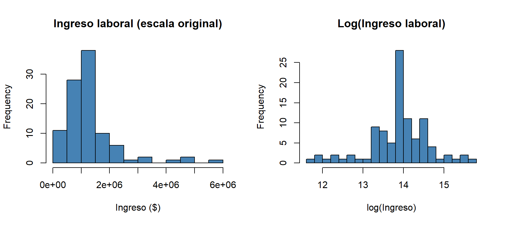
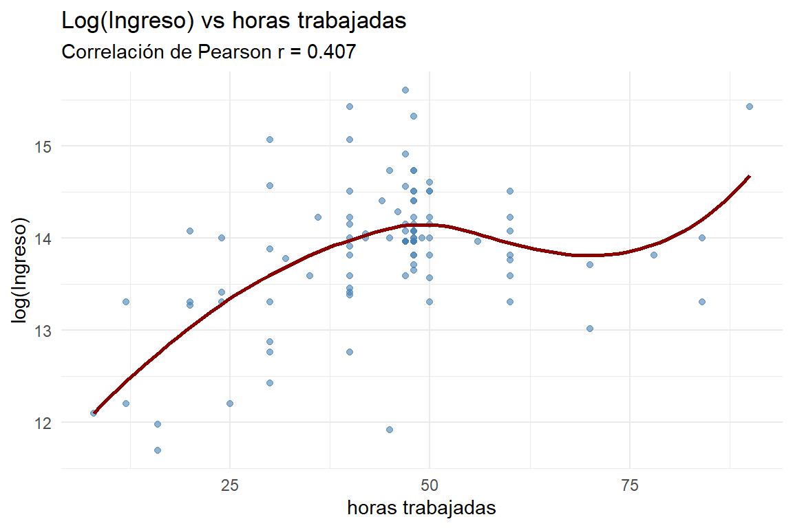
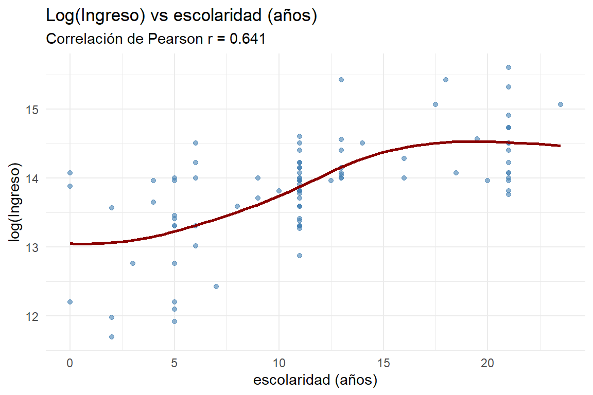
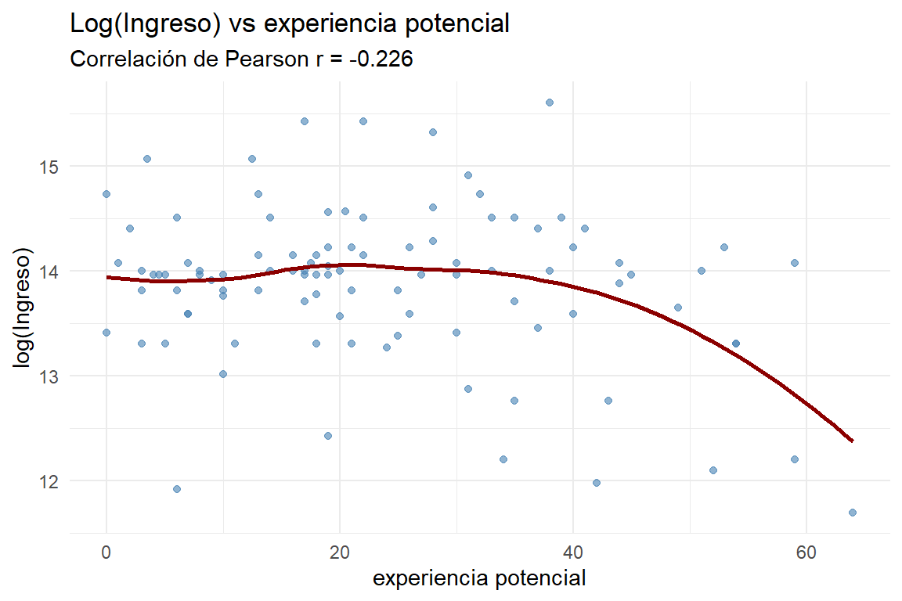
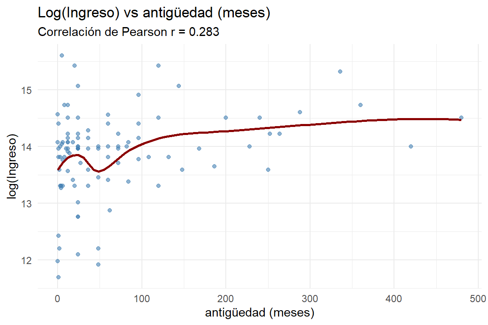
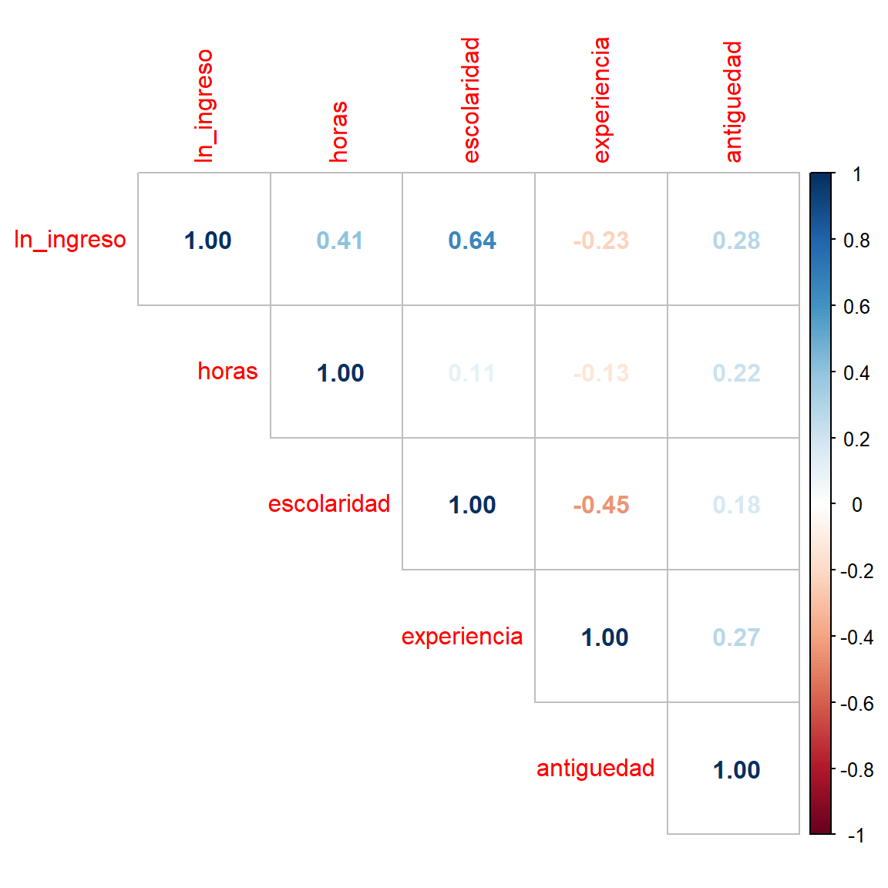
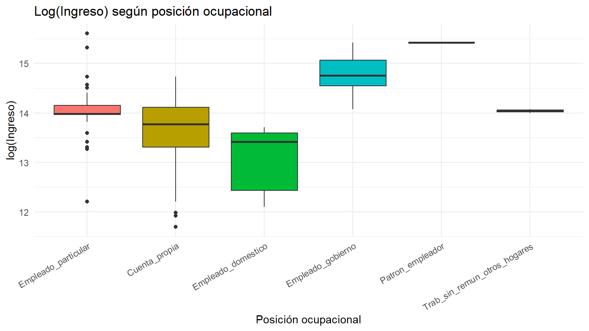
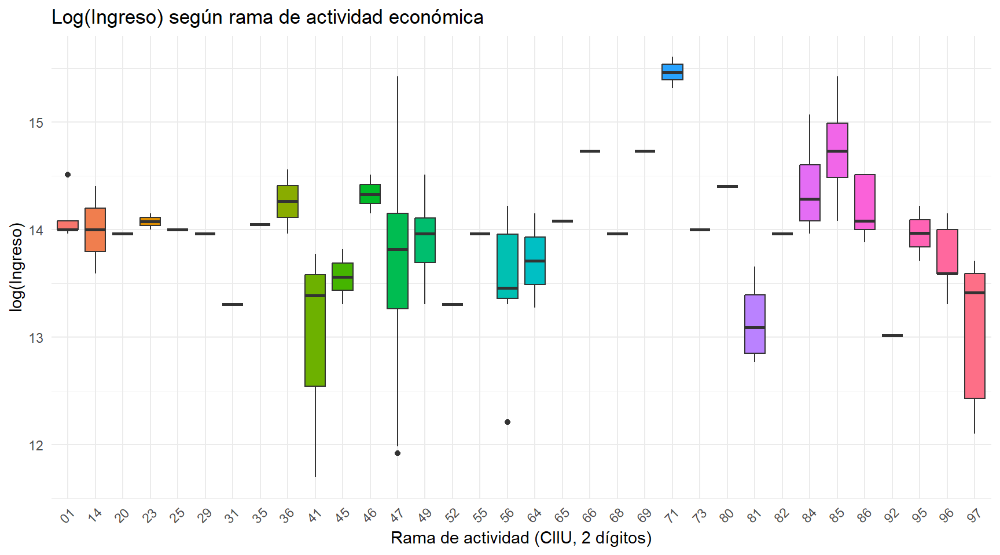

| Nombre | Codigo | Rol | Tipo | Significado |
|---|---|---|---|---|
| Logaritmo del ingreso laboral mensual | INGLABO (transformada) | Y | Continua | Ingreso laboral mensual transformado a escala logarítmica para reducir la asimetría de la distribución. |
| Horas trabajadas por semana | P6800 | X1 | Continua | Intensidad del trabajo desarrollado durante la semana de referencia. |
| Años de escolaridad | P3042 / P3042S1 (derivada) | X2 | Continua | Años de educación formal aprobados; mide la acumulación de capital humano. |
| Experiencia potencial | P6040, P3042, P3042S1 (derivada) | X3 | Continua | Edad - escolaridad - 6; aproxima los años potenciales de experiencia laboral. |
| Experiencia potencial al cuadrado | Derivada de X3 | X4 | Continua | Captura el efecto no lineal (rendimientos decrecientes) de la experiencia sobre el ingreso. |
| Antigüedad en el empleo actual | P6426 | X6 | Continua | Meses en el empleo u ocupación actual; aproxima estabilidad y experiencia específica. |
| Posición ocupacional | P6430 | X5 (Z1) | Categórica | Forma de vinculación laboral (empleado particular, del gobierno, cuenta propia, etc.). |
| Rama de actividad económica | RAMA2D_R4 | X7 (Z2) | Categórica | Sector económico (CIIU, 2 dígitos) en el que se desempeña el trabajador. |
Proyecto de Regresión Lineal Múltiple
Determinantes del ingreso laboral mensual en Colombia
1 Enunciado del proyecto
El proyecto consiste en buscar una base de datos con datos colombianos que contenga una variable de respuesta continua (\(Y\)), al menos cinco covariables continuas (\(X\)) y una variable categórica (\(Z\)) con al menos tres categorías. Los análisis se realizan con máximo 100 registros. El proyecto tiene tres entregas y una exposición final.
- Contextualizar el fenómeno a modelar: explicar el significado de la variable de respuesta y las covariables, la relevancia del estudio y su objetivo. Establecer dos hipótesis que se desean probar con el modelo.
- Realizar un análisis descriptivo exhaustivo y pertinente para el tipo de modelo que se va a aplicar.
2 Introducción
El ingreso laboral es uno de los principales determinantes del bienestar de los hogares colombianos y uno de los indicadores más utilizados para analizar la desigualdad económica del país. Explicar por qué unos trabajadores ganan más que otros es una pregunta central de la economía laboral, y la respuesta habitual —propuesta por Mincer (1974)— es que el ingreso depende principalmente de la acumulación de capital humano (educación y experiencia), de la intensidad con que se trabaja (horas) y de las características del empleo (tipo de vinculación y sector económico).
En Colombia, donde la informalidad laboral y la heterogeneidad sectorial son altas, estos factores no siempre se traducen en el mismo nivel de ingreso: dos personas con la misma escolaridad pueden percibir remuneraciones muy distintas según su posición ocupacional o la rama de actividad en la que trabajan. Este proyecto busca cuantificar, a partir de microdatos de la Gran Encuesta Integrada de Hogares (GEIH), qué tanto explican estas variables la variabilidad del ingreso laboral mensual.
2.1 Relevancia
Comprender los determinantes del ingreso laboral es relevante tanto desde la perspectiva académica como de política pública. Desde la teoría del capital humano, permite contrastar empíricamente si la educación y la experiencia se traducen efectivamente en mayores retornos salariales en el mercado colombiano. Desde la política pública, identificar qué variables —además de la educación— están asociadas a mayores o menores ingresos (posición ocupacional, sector económico, antigüedad) aporta evidencia útil para el diseño de políticas de formalización laboral, empleo y reducción de brechas salariales.
2.2 Variables seleccionadas
2.2.1 Descripción detallada de las variables
Y: Logaritmo del ingreso laboral mensual. La variable de respuesta corresponde al ingreso laboral mensual percibido por las personas ocupadas incluidas en la GEIH, expresado en pesos colombianos. Dado que en economía laboral es ampliamente reconocido que la distribución de los ingresos presenta una marcada asimetría positiva, la variable dependiente se transforma mediante el logaritmo natural, lo que reduce la asimetría, disminuye la influencia de valores extremos y permite interpretar los coeficientes del modelo como variaciones porcentuales aproximadas del ingreso (especificación clásica de Mincer, 1974).
X1: Horas trabajadas por semana. Número de horas que la persona trabajó habitualmente durante la semana de referencia en su ocupación principal. Se espera una relación positiva con el ingreso.
X2: Años de escolaridad. Construida a partir del nivel educativo alcanzado (P3042) y el último grado aprobado dentro de ese nivel (P3042S1), siguiendo la convención estándar de conversión a años acumulados de educación usada en estudios de mercado laboral con la GEIH.
X3: Experiencia potencial. Se calcula como \(\text{Edad} - \text{Escolaridad} - 6\), asumiendo que las personas ingresan al sistema educativo aproximadamente a los seis años y comienzan su vida laboral al finalizar su formación.
X4: Experiencia potencial al cuadrado. Incorpora la relación cóncava entre experiencia e ingreso: los ingresos aumentan con la experiencia, pero a una tasa decreciente.
X5 (Z1): Posición ocupacional. Forma de vinculación del trabajador con el mercado laboral (empleado particular, empleado del gobierno, cuenta propia, patrón, empleado doméstico, etc.). Variable categórica incorporada mediante variables dummy.
X6: Antigüedad en el empleo actual. Meses que el trabajador lleva en su empleo u ocupación actual; aproxima estabilidad laboral y experiencia específica en la organización.
X7 (Z2): Rama de actividad económica. Sector económico en el que se desempeña el trabajador, agrupado según la Clasificación Industrial Internacional Uniforme (CIIU) a 2 dígitos.
2.2.2 Verificación: independencia entre la variable respuesta y las covariables
Antes de fijar el conjunto de covariables se verificó que ninguna de ellas sea, por construcción, un componente algebraico de la variable de respuesta. El ingreso laboral mensual (inglabo) es un campo reportado directamente por el encuestado en la GEIH —no una suma ni un producto de otras variables de la encuesta calculado por nosotros—, por lo que \(Y=\ln(\text{inglabo})\) no se construye a partir de \(X_1,\dots,X_7\). En particular:
- \(Y\) no es igual a horas × tarifa horaria, ni a la suma de sus componentes; el DANE la recoge como una única pregunta de ingreso total.
- La escolaridad (\(X_2\)) y la experiencia potencial (\(X_3\)) se derivan de variables demográficas y educativas (
p3042,p3042s1,p6040), no del ingreso, por lo que tampoco intervienen en la construcción de \(Y\). - El resto de covariables (\(X_1\) horas, \(X_5\) posición, \(X_6\) antigüedad, \(X_7\) rama) provienen de preguntas independientes del módulo de ocupados y no participan en el cálculo de
inglabo.
Esto garantiza que la relación entre \(Y\) y cada \(X\) que se explora en el análisis descriptivo (y que luego se modelará) es una asociación empírica a estimar, y no una identidad matemática impuesta por la propia definición de las variables.
2.3 Objetivo
Determinar qué características individuales (educación, experiencia), laborales (horas, antigüedad, posición ocupacional) y sectoriales (rama de actividad) explican el logaritmo del ingreso laboral mensual de los trabajadores colombianos, con el fin de aportar evidencia sobre los principales determinantes del ingreso en el mercado laboral del país.
2.4 Hipótesis
Las siguientes hipótesis se desprenden directamente de la contextualización presentada en la Introducción y la Relevancia (teoría del capital humano de Mincer, 1974, y la heterogeneidad del mercado laboral colombiano). Cada una se plantea de forma que pueda traducirse, en la etapa de modelación, en el signo y la significancia esperados de parámetros específicos del modelo \(\ln(Y_i)=\beta_0+\beta_1X_{1i}+\dots+\beta_7X_{7i}+\varepsilon_i\).
Hipótesis 1: la escolaridad y la experiencia potencial explican una parte sustancial de la variabilidad del ingreso laboral. De acuerdo con la teoría del capital humano, se espera que los trabajadores con mayor escolaridad y mayor experiencia potencial —hasta el punto en que los rendimientos empiezan a decrecer— perciban ingresos más altos. En términos del modelo, esta hipótesis se traduce en \(\beta_2>0\) (escolaridad), \(\beta_3>0\) (experiencia) y \(\beta_4<0\) (experiencia al cuadrado), reflejando el perfil cóncavo típico de la ecuación de Mincer; se espera además que ambos coeficientes sean estadísticamente significativos.
Hipótesis 2: la posición ocupacional y la rama de actividad económica generan diferencias sistemáticas en el ingreso, incluso después de considerar la escolaridad y la experiencia. Dada la heterogeneidad e informalidad del mercado laboral colombiano descrita en la Relevancia, se espera que existan brechas de ingreso entre categorías ocupacionales y sectoriales que la educación y la experiencia por sí solas no logran explicar. En el modelo, esto se traduce en que al menos algunos de los coeficientes asociados a las variables dummy de posición ocupacional (\(\beta_5\)) y de rama de actividad (\(\beta_7\)) —tomando como referencia “Empleado particular”— sean estadísticamente significativos y distintos de cero.
3 Análisis descriptivo
3.1 Información sobre la base de datos
La base de datos utilizada corresponde a la Gran Encuesta Integrada de Hogares (GEIH), operativo de enero de 2024, publicada por el Departamento Administrativo Nacional de Estadística (DANE). Se utilizan dos de sus módulos:
- Ocupados: contiene las variables laborales de las personas ocupadas (ingreso, horas trabajadas, posición ocupacional, antigüedad, rama de actividad, entre otras).
- Características generales, seguridad social en salud y educación: contiene las variables demográficas y educativas (edad, nivel educativo, grado aprobado).
Ambos módulos se identifican a nivel de persona mediante las llaves directorio, secuencia_p y orden, por lo que se unen (left_join) usando esa combinación.
Code
paquetes <- c("dplyr", "car", "ggplot2", "corrplot", "readr", "tidyr", "stringr", "knitr")
instalar <- paquetes[!(paquetes %in% installed.packages()[, "Package"])]
if (length(instalar)) install.packages(instalar)Code
library(dplyr)
library(readr)
library(ggplot2)
library(car)
library(corrplot)
library(tidyr)
library(stringr)
library(knitr)Quarto usa como directorio de trabajo la carpeta donde está guardado este archivo .qmd. Ajusta ruta_datos según dónde tengas los archivos .CSV de la GEIH. Verifica el nombre exacto de la carpeta en tu explorador de archivos (mayúsculas, guiones y guiones bajos deben coincidir exactamente):
Code
# OJO: el nombre debe coincidir EXACTAMENTE con el de la carpeta en Windows,
# incluyendo mayúsculas/minúsculas y el guion "-main" (no guion bajo "_main").
ruta_datos <- "C:/Users/Daniela/Downloads/ModeloSalariosColombianos-main"Code
ocupados <- read_csv2(
file.path(ruta_datos, "Ocupados.CSV"),
show_col_types = FALSE
)
caracteristicas <- read_csv2(
file.path(ruta_datos, "Características generales, seguridad social en salud y educación.CSV"),
show_col_types = FALSE
)
names(ocupados) <- tolower(names(ocupados))
names(caracteristicas) <- tolower(names(caracteristicas))
llaves <- c("directorio", "secuencia_p", "orden")
stopifnot(all(llaves %in% names(ocupados)))
stopifnot(all(llaves %in% names(caracteristicas)))
datos <- ocupados %>%
left_join(caracteristicas, by = llaves, relationship = "one-to-one")Code
# --- Escolaridad (años acumulados) ---------------------------------------
anios_previos <- c(
"1" = 0, "2" = 0, "3" = 0, "4" = 5, "5" = 9, "6" = 9, "7" = 11,
"8" = 11, "9" = 13, "10" = 16, "11" = 17, "12" = 19, "13" = 21
)
niveles_semestres <- c("8", "9", "10", "11", "12", "13")
datos <- datos %>%
mutate(
nivel_chr = as.character(p3042),
escolaridad = anios_previos[nivel_chr] +
ifelse(nivel_chr %in% niveles_semestres,
coalesce(p3042s1, 0) / 2,
coalesce(p3042s1, 0)),
escolaridad = ifelse(nivel_chr %in% c("1", "2"), 0, escolaridad)
)
# --- Experiencia potencial y su cuadrado ----------------------------------
datos <- datos %>%
mutate(
experiencia = pmax(p6040 - escolaridad - 6, 0),
experiencia2 = experiencia^2
)
# --- Log del ingreso -------------------------------------------------------
datos <- datos %>%
filter(!is.na(inglabo), inglabo > 0) %>%
mutate(ln_ingreso = log(inglabo))
# --- Variables categóricas ---------------------------------------------
etiquetas_posicion <- c(
"1" = "Empleado_particular", "2" = "Empleado_gobierno",
"3" = "Empleado_domestico", "4" = "Cuenta_propia",
"5" = "Patron_empleador", "6" = "Trab_familiar_sin_remun",
"7" = "Trab_sin_remun_otros_hogares", "8" = "Jornalero_peon",
"9" = "Otro"
)
datos <- datos %>%
mutate(
posicion = factor(etiquetas_posicion[as.character(p6430)]),
rama = factor(rama2d_r4)
)
datos$posicion <- relevel(datos$posicion, ref = "Empleado_particular")
# --- Selección y limpieza final -------------------------------------------
datos_modelo <- datos %>%
rename(horas = p6800, antiguedad = p6426, ingreso = inglabo, edad = p6040) %>%
select(ingreso, ln_ingreso, horas, edad, escolaridad, experiencia, experiencia2,
antiguedad, posicion, rama) %>%
filter(complete.cases(.)) %>%
filter(horas > 0, horas <= 100,
escolaridad >= 0, escolaridad <= 25,
antiguedad >= 0)
poblacion_n <- nrow(datos_modelo)Tras la unión, la construcción de variables y la eliminación de registros incompletos o inconsistentes (horas fuera de rango, escolaridad fuera de rango, etc.), la base analítica de referencia queda con 27327 observaciones.
3.2 Selección de la muestra
Siguiendo la restricción del enunciado (máximo 100 registros), se aplicó un muestreo aleatorio simple (MAS) sobre la base analítica de referencia para obtener una muestra de \(n=100\) observaciones. Bajo este esquema, cada individuo tuvo la misma probabilidad de selección:
\[\pi_i = \frac{n}{N} = \frac{100}{27327}\]
Code
set.seed(123)
n_muestra <- 100
muestra <- datos_modelo %>% slice_sample(n = n_muestra)
fraccion_muestreo <- round(n_muestra / poblacion_n * 100, 2)| Parametro | Valor |
|---|---|
| Población de referencia (N) | 27327 |
| Tamaño de muestra (n) | 100 |
| Fracción de muestreo (n/N) | 0.37% |
| Semilla aleatoria | 123 |
3.3 Base consolidada
La base analítica final contiene 100 observaciones y 8 variables: la variable respuesta, cinco covariables continuas (horas, escolaridad, experiencia, experiencia al cuadrado y antigüedad) y dos variables categóricas (posición ocupacional y rama de actividad).
| ln_ingreso | horas | escolaridad | experiencia | experiencia2 | antiguedad | posicion | rama |
|---|---|---|---|---|---|---|---|
| 14.60 | 50 | 11.0 | 28.0 | 784.00 | 288 | Empleado_gobierno | 84 |
| 14.57 | 30 | 19.5 | 20.5 | 420.25 | 0 | Empleado_particular | 85 |
| 14.51 | 50 | 14.0 | 39.0 | 1521.00 | 480 | Empleado_gobierno | 86 |
| 14.91 | 47 | 21.0 | 31.0 | 961.00 | 96 | Empleado_gobierno | 85 |
| 13.02 | 70 | 6.0 | 10.0 | 100.00 | 24 | Cuenta_propia | 92 |
| 13.30 | 20 | 5.0 | 54.0 | 2916.00 | 3 | Cuenta_propia | 56 |
| 14.56 | 47 | 13.0 | 19.0 | 361.00 | 60 | Empleado_gobierno | 36 |
| 13.82 | 50 | 11.0 | 21.0 | 441.00 | 8 | Empleado_particular | 47 |
| 13.65 | 48 | 4.0 | 49.0 | 2401.00 | 186 | Cuenta_propia | 81 |
| 15.32 | 48 | 21.0 | 28.0 | 784.00 | 336 | Empleado_particular | 71 |
3.4 Variable respuesta: logaritmo del ingreso laboral mensual
| Medida | Valor |
|---|---|
| n | 100 |
| Media | 13.884 |
| Mediana | 13.964 |
| Desviación estándar | 0.735 |
| Coeficiente de variación | 5.3% |
| Mínimo | 11.695 |
| Primer cuartil (Q1) | 13.592 |
| Tercer cuartil (Q3) | 14.221 |
| Máximo | 15.607 |
| Asimetría | -0.625 |
La Tabla anterior presenta los estadísticos descriptivos de la variable de respuesta ya transformada. En promedio, el log-ingreso de la muestra es de 13.884, con una mediana de 13.964; la cercanía entre ambas medidas y una asimetría de -0.625 son consistentes con el efecto esperado de la transformación logarítmica: corrige buena parte del sesgo positivo propio de la distribución original de los ingresos.

Se muestra el ingreso en su escala original y ya transformado a logaritmo: el histograma de la izquierda evidencia la asimetría positiva característica de los ingresos laborales (unos pocos valores muy altos alargan la cola derecha), mientras que el de la derecha muestra una distribución considerablemente más simétrica, lo que respalda el uso de \(\ln(Y)\) como variable de respuesta del modelo.
3.5 Descripción de las covariables continuas
| Variable | Media | Mediana | DE | Min | Max | Q1 | Q3 |
|---|---|---|---|---|---|---|---|
| antiguedad | 69.13 | 24.00 | 95.76 | 0 | 480.0 | 12.00 | 84.00 |
| escolaridad | 11.72 | 11.00 | 5.93 | 0 | 23.5 | 7.75 | 14.50 |
| experiencia | 23.52 | 20.25 | 15.51 | 0 | 64.0 | 10.75 | 34.25 |
| experiencia2 | 790.98 | 410.12 | 905.15 | 0 | 4096.0 | 115.75 | 1173.25 |
| horas | 44.35 | 47.00 | 14.44 | 8 | 90.0 | 40.00 | 48.00 |




Las figuras anteriores muestran la relación entre el log-ingreso y cada covariable continua, junto con una curva LOESS y el coeficiente de correlación de Pearson. Conforme a la teoría del capital humano, se espera que la escolaridad y las horas trabajadas muestren las asociaciones positivas más claras; la relación con la experiencia potencial debería aproximarse a una forma cóncava, coherente con la inclusión de su término cuadrático en el modelo.
| ln_ingreso | horas | escolaridad | experiencia | antiguedad | |
|---|---|---|---|---|---|
| ln_ingreso | 1.000 | 0.407 | 0.641 | -0.226 | 0.283 |
| horas | 0.407 | 1.000 | 0.109 | -0.135 | 0.218 |
| escolaridad | 0.641 | 0.109 | 1.000 | -0.447 | 0.176 |
| experiencia | -0.226 | -0.135 | -0.447 | 1.000 | 0.274 |
| antiguedad | 0.283 | 0.218 | 0.176 | 0.274 | 1.000 |

La matriz de correlaciones permite evaluar, además de la relación con la variable de respuesta, el grado de asociación entre las covariables entre sí — un primer indicio sobre posibles problemas de multicolinealidad que se evaluarán formalmente (VIF) en etapas posteriores del proyecto.
3.6 Descripción de las variables categóricas
3.6.1 Posición ocupacional
| posicion | n | Media_ln_ingreso | Mediana_ln_ingreso |
|---|---|---|---|
| Empleado_particular | 42 | 14.04 | 13.98 |
| Cuenta_propia | 42 | 13.62 | 13.77 |
| Empleado_gobierno | 8 | 14.78 | 14.76 |
| Empleado_domestico | 5 | 13.05 | 13.42 |
| Trab_sin_remun_otros_hogares | 2 | 14.04 | 14.04 |
| Patron_empleador | 1 | 15.42 | 15.42 |

3.6.2 Rama de actividad económica
| rama | n | Media_ln_ingreso | Mediana_ln_ingreso |
|---|---|---|---|
| 47 | 15 | 13.62 | 13.82 |
| 49 | 7 | 13.91 | 13.96 |
| 56 | 7 | 13.50 | 13.46 |
| 85 | 7 | 14.74 | 14.73 |
| 01 | 5 | 14.11 | 14.00 |
| 84 | 5 | 14.40 | 14.29 |
| 86 | 5 | 14.20 | 14.08 |
| 96 | 5 | 13.73 | 13.59 |
| 97 | 5 | 13.05 | 13.42 |
| 81 | 4 | 13.15 | 13.09 |
| 41 | 3 | 12.95 | 13.38 |
| 14 | 2 | 14.00 | 14.00 |
| 23 | 2 | 14.07 | 14.07 |
| 36 | 2 | 14.26 | 14.26 |
| 45 | 2 | 13.56 | 13.56 |
| 46 | 2 | 14.33 | 14.33 |
| 64 | 2 | 13.71 | 13.71 |
| 68 | 2 | 13.96 | 13.96 |
| 71 | 2 | 15.46 | 15.46 |
| 95 | 2 | 13.97 | 13.97 |
| 20 | 1 | 13.96 | 13.96 |
| 25 | 1 | 14.00 | 14.00 |
| 29 | 1 | 13.96 | 13.96 |
| 31 | 1 | 13.30 | 13.30 |
| 35 | 1 | 14.05 | 14.05 |
| 52 | 1 | 13.30 | 13.30 |
| 55 | 1 | 13.96 | 13.96 |
| 65 | 1 | 14.08 | 14.08 |
| 66 | 1 | 14.73 | 14.73 |
| 69 | 1 | 14.73 | 14.73 |
| 73 | 1 | 14.00 | 14.00 |
| 80 | 1 | 14.40 | 14.40 |
| 82 | 1 | 13.96 | 13.96 |
| 92 | 1 | 13.02 | 13.02 |

Al tratarse de una muestra de 100 observaciones, es esperable que algunas categorías —tanto de posición ocupacional como de rama de actividad— queden representadas por muy pocas observaciones. Esto deberá tenerse en cuenta al momento de estimar el modelo, evaluando si es necesario agrupar categorías poco frecuentes para evitar coeficientes poco confiables.
4 Modelo matemático propuesto
Con fundamento en la teoría del capital humano y en la especificación clásica de la ecuación de ingresos de Mincer, se propone estimar un modelo de regresión lineal múltiple en el que el logaritmo natural del ingreso laboral mensual constituye la variable dependiente:
\[\ln(Y_i)=\beta_0+\beta_1X_{1i}+\beta_2X_{2i} +\beta_3X_{3i} +\beta_4X_{4i} +\beta_5X_{5i} +\beta_6X_{6i} +\beta_7X_{7i} +\varepsilon_i\]
donde \(X_1\): horas trabajadas por semana; \(X_2\): años de escolaridad; \(X_3\): experiencia potencial; \(X_4\): experiencia potencial al cuadrado; \(X_5\): posición ocupacional (dummy); \(X_6\): antigüedad en el empleo actual; \(X_7\): rama de actividad económica (dummy); \(\beta_0\): intercepto; \(\varepsilon_i\): error aleatorio.
Antes de estimar el modelo definitivo se verificará el cumplimiento de los supuestos de la regresión lineal múltiple, evaluando la existencia de multicolinealidad mediante el Factor de Inflación de la Varianza (VIF), la homocedasticidad de los residuos, la normalidad de los errores y la posible presencia de observaciones influyentes.
5 Conclusiones
El análisis descriptivo confirma que la transformación logarítmica del ingreso laboral corrige de forma considerable la asimetría propia de esta variable, lo que respalda su uso como variable de respuesta del modelo. Las covariables continuas —en particular escolaridad y horas trabajadas— muestran las asociaciones esperadas con el log-ingreso según la teoría del capital humano, mientras que la posición ocupacional y la rama de actividad evidencian diferencias en el nivel medio de ingreso entre categorías, lo que sugiere que ambas variables aportan información relevante para el modelo más allá de la escolaridad y la experiencia.
Al mismo tiempo, el análisis muestra que ninguna covariable por sí sola explica la totalidad de la variabilidad del ingreso, lo que anticipa que sus efectos deberán evaluarse de forma conjunta en un modelo de regresión múltiple, prestando especial atención a la multicolinealidad entre escolaridad y experiencia (ambas derivadas de la edad y el nivel educativo) y a las categorías con pocas observaciones dentro de posición ocupacional y rama de actividad.
6 Referencias
Mincer, J. (1974). Schooling, Experience, and Earnings. National Bureau of Economic Research.
Departamento Administrativo Nacional de Estadística – DANE. (2024). Gran Encuesta Integrada de Hogares (GEIH). Microdatos. Recuperado de https://microdatos.dane.gov.co